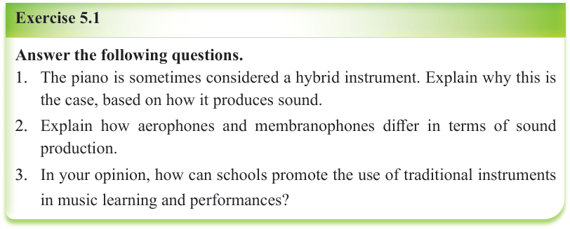
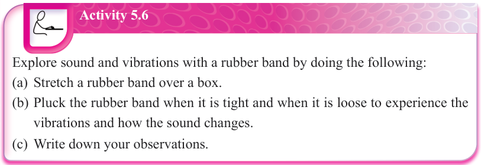

Exercise 5.1
Answer the following questions.
1. The piano is sometimes considered a hybrid instrument. Explain why this is the case, based on how it produces sound.
2. Explain how aerophones and membranophones differ in terms of sound production.
3. In your opinion, how can schools promote the use of traditional instruments in music learning and performances?
Understanding musical sounds
Sound is a form of energy that travels as vibrations through air, water or solid objects.
Sound begins with the vibration of an object such as a table that is pounded or a string that is plucked.
The vibrations are transmitted to the ears by a medium, which is usually air.
As a result of the vibrations, the eardrums start vibrating too and signals are transmitted to the brain.
The brain then processes these signals by selecting, organising and interpreting them.
Sounds may be perceived as pleasant or unpleasant depending on their nature.


Activity 5.6
Explore sound and vibrations with a rubber band by doing the following:
(a) Stretch a rubber band over a box.
(b) Pluck the rubber band when it is tight and when it is loose to experience the vibrations and how the sound changes.
(c) Write down your observations.
Properties of musical sounds
Music can be distinguished from other sounds by recognising the four main properties of musical sounds: pitch, dynamics, timbre (tone colour) and duration.
(a) Pitch: This refers to the highness or lowness we hear in a sound.
The faster the vibrations, the higher the pitch; the slower the vibrations, the lower the pitch.
In general, when the vibrating object is small, it vibrates faster, producing a higher pitch.
For example, a whistle has a high pitch, while a bass drum has a low pitch.